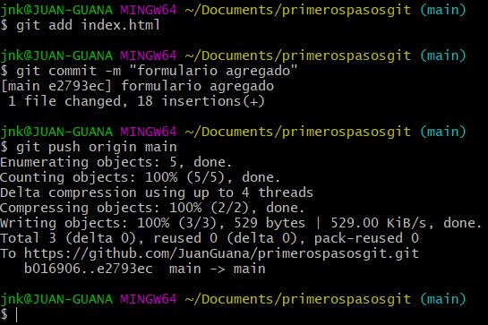
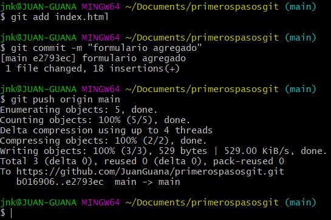

Información prioritaria sobre Git
Conceptos básicos de Git
Git es un sistema de control de versiones distribuido, diseñado para manejar desde proyectos pequeños hasta muy grandes con rapidez y eficiencia.
Fue creado por Linus Torvalds en 2005 y es ampliamente utilizado en el desarrollo de software debido a su velocidad, diseño descentralizado y robustez.
Git es un sistema de control de versiones distribuido que permite el manejo eficiente de cambios en proyectos de software.
Comandos esenciales de Git
Dominar Git y el control de versiones en general es crucial para cualquier desarrollador de software moderno. Proporciona un historial claro de los cambios, facilita la colaboración y mejora la gestión de proyectos.
Continuar explorando y practicando con Git te permitirá aprovechar al máximo sus capacidades y beneficios en tus proyectos.

 
